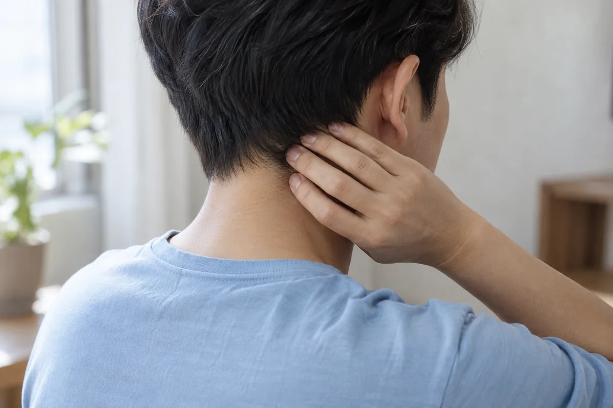

두통·신경통
두통과 신경통은 통증이 생기는 위치와 양상, 동반 증상에 따라 원인을 구분해야 합니다. 반복되는 두통과 저림, 어지럼증의 발생 시점과 지속 시간을 함께 살펴봅니다. 수면과 생활 습관, 복용 중인 약과 병력을 확인하고 필요한 검사나 진료를 안내합니다.
통증의 위치와 움직임, 생활 습관을 함께 살핀 뒤 필요한 치료 방향을 안내합니다.
CONDITIONS
두통·신경통 주요 질환

후두신경통
목 뒤에서 두피로 이어지는 후두신경이 자극받아 뒷머리에 통증이 생기는 질환입니다. 목 주변 근육의 긴장이나 외상 등과 관련될 수 있으며 편두통과 혼동되기도 합니다. 통증 경로와 두피의 민감도, 목의 상태를 함께 확인해 구분합니다.
뒷머리에서 정수리 쪽으로 전기가 흐르듯 짧고 날카로운 통증이 반복될 수 있습니다. 두피가 예민해 머리를 감거나 베개에 닿는 것도 불편해지기도 합니다. 통증 부위를 누르면 아프거나 감각이 둔하게 느껴지는 경우도 있습니다.
만성 긴장성 두통
머리를 누르거나 조이는 양상의 두통이 자주 반복되는 상태입니다. 스트레스와 수면 문제 등이 영향을 줄 수 있으며, 단순히 근육이 뭉친 것만으로 설명되지는 않습니다. 두통의 빈도와 지속 시간, 진통제 사용을 확인해 다른 두통과 구분합니다.
머리 양쪽이 띠로 조이는 듯 묵직하게 아프고 목이나 두피가 민감할 수 있습니다. 일상적인 움직임으로 크게 심해지지 않는 경우가 많습니다. 갑자기 시작된 극심한 두통이나 말하기 어려움·마비가 동반되면 즉시 응급 진료가 필요합니다.
자율신경 관련 통증 및 어지럼증
자율신경은 혈압과 맥박, 소화처럼 의식하지 않아도 이루어지는 몸의 기능을 조절합니다. 이 기능의 이상은 어지럼증이나 소화 불편 등과 관련될 수 있습니다. 다만 증상만으로 확정할 수 없어 복용 약과 다른 질환 가능성도 함께 살펴야 합니다.
일어설 때 어지럽거나 눈앞이 흐려지고, 두근거림·소화 불편·땀 분비 변화 등이 나타날 수 있습니다. 증상은 영향을 받는 기능에 따라 다릅니다. 실신이 반복되거나 흉통·호흡곤란이 동반된다면 신속하게 의료진의 평가를 받아야 합니다.
늑간신경통
갈비뼈 사이의 신경이 자극되거나 손상되어 가슴과 옆구리, 등에 통증이 생기는 상태입니다. 대상포진이나 외상, 흉부 수술 후에 나타날 수 있으며 원인이 뚜렷하지 않기도 합니다. 심장·폐 질환 등 다른 흉통의 원인과 먼저 구분하는 것이 중요합니다.
갈비뼈를 따라 띠 모양으로 찌르거나 화끈거리는 통증과 저림이 나타날 수 있습니다. 기침이나 깊은 숨, 몸을 돌리는 동작에 더 아프기도 합니다. 지속되는 흉통이나 식은땀·호흡곤란이 동반되면 신경통으로 단정하지 말고 즉시 응급 진료를 받아야 합니다.